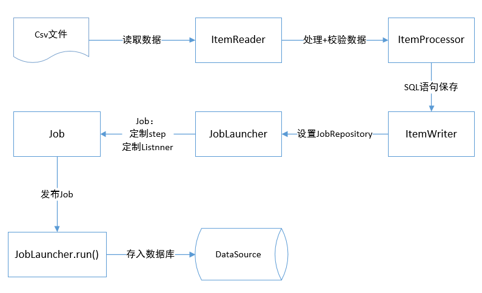

14.3 批处理
在日常的项目开发过程中，批处理是一个非常常见的企业级开发功能，比如日终结息，日终对账，日终盘点库存等业务需求。
Spring Batch 是一款开源的基于 Spring 的企业批处理框架。通过它可以构建出健壮的企业级批处理应用，比如我们可以将csv文件中的数据（数据量几百万甚至几千万都是没问题的）批处理插入保存到数据库中。
Spring Batch 提供了统一的读写接口、丰富的任务处理方式、灵活的事务管理及并发处理，包括日志/跟踪(tracing)，事务管理，任务处理(processing)统计，任务重启， 忽略(skip)，和资源管理等功能。 此外还提供了许多高级服务和特性，使之能够通过优化(optimization ) 和分片技术(partitioning techniques)来高效地执行超大型数据集的批处理任务。这些功能对大数据量处理来说是必不可少的，并且大大简化了批处理应用开发，将开发人员从复杂的任务配置管理过程中解放出来，使他们可以更多地去关注核心的业务处理过程。
正如我们知道的，Spring Batch 是一款批处理应用框架，而不是调度框架。它只关注批处理任务相关的问题，如事务、并发、监控、执行等，并不提供相应的调度功能。因此，如果我们希望批处理任务定期执行（一般的企业应用都有这样的需求，也都是这么做的），可结合 Quartz 等成熟的调度框架实现。
比如Quartz结合Spring Batch完成日终对账功能。更大的业务场景（如结息）可能需要Elastic-Job分布式调度框架。
14.3.1 基本概念
Spring Batch框架的组成部分有：
JobRepository：用来注册Job容器，设置数据库相关属性。
JobLauncher：用来启动Job的接口。
Job：我们要实际执行的任务，包含一个或多个。
Step：即步骤，包括：ItemReader->ItemProcessor->ItemWriter。
ItemReader：用来读取数据，做实体类与数据字段之间的映射。比如读取csv文件中的人员数据，之后对应实体person的字段做mapper。
ItemProcessor：用来处理数据的接口，同时可以做数据校验（设置校验器，使用JSR-303(hibernate-validator)注解），比如将中文性别男/女，转为M/F。同时校验年龄字段是否符合要求等。
ItemWriter：用来输出数据的接口，设置数据库源。编写预处理SQL插入语句。
一个典型的处理过程如下图所示：

14.3.2 集成
在Spring Boot中集成Spring Batch一如既往地方便。
Spring Batch 本身较为复杂，本示例演示如何在Spring Boot中集成使用Spring Batch，并不深入演示Spring Batch的使用，感兴趣的读者请自行寻找Spring Batch更进一步的学习资料。
创建一个Spring Boot项目。
选择Spring Batch等启动器依赖。
项目的pom主要依赖如下：
<dependency>
<groupId>org.springframework.boot</groupId>
<artifactId>spring-boot-starter-batch</artifactId>
</dependency>
<dependency>
<groupId>org.springframework.boot</groupId>
<artifactId>spring-boot-starter-jdbc</artifactId>
</dependency>
<dependency>
<groupId>org.springframework.boot</groupId>
<artifactId>spring-boot-starter-web</artifactId>
</dependency>
<dependency>
<groupId>mysql</groupId>
<artifactId>mysql-connector-java</artifactId>
<scope>runtime</scope>
</dependency>
在application.yml配置文件中设置数据源及Spring Batch配置信息。
spring:
datasource:
url: jdbc:mysql://localhost:3306/batch?useUnicode=true&characterEncoding=utf-8&serverTimezone=GMT%2B8
username: root
password: 123456
driver-class-name: com.mysql.cj.jdbc.Driver
batch:
job:
enabled: false #需要jobLaucher.run执行
initialize-schema: always
在src/main/resources文件夹中创建user.csv文件，添加5条记录，以供Spring Batch读取并存入数据库。
id,username,gender,age
1,张三丰,男,99
2,张无忌,男,28
3,东方不败,女,16
4,李寻欢,男,22
5,唐伯虎,男,21
创建user数据库表，以存储Spring Batch从csv文件读取到的数据。
DROP TABLE IF EXISTS `user`;
CREATE TABLE `user` (
`id` int(11) NOT NULL,
`username` varchar(255) DEFAULT NULL,
`gender` varchar(8) DEFAULT NULL,
`age` int(11) DEFAULT NULL,
PRIMARY KEY (`id`)
) ENGINE=InnoDB DEFAULT CHARSET=utf8;
创建数据库user表对应的实体类User。
package com.example.batch.entity;
public class User {
private Integer id;
private String username;
private String gender;
private int age;
public Integer getId() {
return id;
}
public void setId(Integer id) {
this.id = id;
}
public String getUsername() {
return username;
}
public void setUsername(String username) {
this.username = username;
}
public String getGender() {
return gender;
}
public void setGender(String gender) {
this.gender = gender;
}
public int getAge() {
return age;
}
public void setAge(int age) {
this.age = age;
}
}
创建SpringBatchConfig配置类，在其中通过@EnableBatchProcessing注解打开Spring Batch支持。
package com.example.batch.config;
import javax.sql.DataSource;
import org.springframework.batch.core.Job;
import org.springframework.batch.core.Step;
import org.springframework.batch.core.configuration.annotation.EnableBatchProcessing;
import org.springframework.batch.core.configuration.annotation.JobBuilderFactory;
import org.springframework.batch.core.configuration.annotation.StepBuilderFactory;
import org.springframework.batch.item.database.BeanPropertyItemSqlParameterSourceProvider;
import org.springframework.batch.item.database.JdbcBatchItemWriter;
import org.springframework.batch.item.file.FlatFileItemReader;
import org.springframework.batch.item.file.mapping.BeanWrapperFieldSetMapper;
import org.springframework.batch.item.file.mapping.DefaultLineMapper;
import org.springframework.batch.item.file.transform.DelimitedLineTokenizer;
import org.springframework.beans.factory.annotation.Autowired;
import org.springframework.context.annotation.Bean;
import org.springframework.context.annotation.Configuration;
import org.springframework.core.io.ClassPathResource;
import com.example.batch.entity.User;
/**
* Spring Batch示例
* @author Kevin
*
*/
@Configuration
@EnableBatchProcessing // 开启批处理的支持
public class SpringBatchConfig {
@Autowired
DataSource dataSource;
@Autowired
JobBuilderFactory jobBuilderFactory;
@Autowired
StepBuilderFactory stepBuilderFactory;
/**
* 定义Reader，读取ClassPath下的user.csv，并封包到User实体类
* @return
*/
@Bean
FlatFileItemReader<User> itemReader() {
FlatFileItemReader<User> reader = new FlatFileItemReader<User>();
reader.setLinesToSkip(1);// 跳过表头
reader.setResource(new ClassPathResource("user.csv"));
reader.setLineMapper(new DefaultLineMapper<User>() {// entity与csv数据做映射
{
setLineTokenizer(new DelimitedLineTokenizer() {
{
setNames(new String[] { "id", "username", "gender", "age" });
setDelimiter(DELIMITER_COMMA);
}
});
setFieldSetMapper(new BeanWrapperFieldSetMapper<User>() {
{
setTargetType(User.class);
}
});
}
});
return reader;
}
/**
* 定义Writer，用给定的sql将User实体类写入数据库
* @return
*/
@Bean
JdbcBatchItemWriter<User> jdbcBatchItemWriter() {
JdbcBatchItemWriter<User> writer = new JdbcBatchItemWriter<>();
writer.setDataSource(dataSource);
writer.setItemSqlParameterSourceProvider(new BeanPropertyItemSqlParameterSourceProvider<User>());
writer.setSql("insert into user(id,username,gender,age) values(:id,:username,:gender,:age)");
return writer;
}
/**
* 定义步骤，在步骤中绑定Reader和Writer，每读到2条数据及写入数据库
* @return
*/
@Bean
Step myStep(FlatFileItemReader<User> reader, JdbcBatchItemWriter<User> writer) {
return stepBuilderFactory.get("myStep")
.<User, User>chunk(2)
.reader(reader)
.writer(writer)
.build();
}
/**
* 创建任务，使用上面的步骤
* @return
*/
@Bean
Job myJob(Step step) {
return jobBuilderFactory.get("myJob")
.start(step)
.build();
}
}
Spring Batch使用的一般步骤就是：创建Reader，创建Writer，创建步骤绑定Reader和Writer，创建任务（绑定步骤）。
创建一个Controller，以JobLauncher.run启动Spring Batch，运行Job，从csv文件中读取数据，并写入数据库。
package com.example.batch.controller;
import org.springframework.batch.core.Job;
import org.springframework.batch.core.JobParametersBuilder;
import org.springframework.batch.core.launch.JobLauncher;
import org.springframework.beans.factory.annotation.Autowired;
import org.springframework.web.bind.annotation.RequestMapping;
import org.springframework.web.bind.annotation.RestController;
@RestController
@RequestMapping("/batch/")
public class JobController {
@Autowired
JobLauncher jobLauncher;
@Autowired
Job job;
@RequestMapping("/run")
public String run() {
String result = "STOP";
try {
jobLauncher.run(job, new JobParametersBuilder().toJobParameters());
result = "RUN";
} catch (Exception e) {
e.printStackTrace();
}
return result;
}
}
运行Spring Boot应用，打开浏览器访问http://localhost:8080/batch/run，启动JobLauncher，观察控制台输出的日志信息。
2020-01-22 21:46:57.137 INFO 10692 --- [nio-8080-exec-1] o.s.b.c.l.support.SimpleJobLauncher : Job: [SimpleJob: [name=myJob]] launched with the following parameters: [{}]
2020-01-22 21:46:57.193 INFO 10692 --- [nio-8080-exec-1] o.s.batch.core.job.SimpleStepHandler : Executing step: [myStep]
2020-01-22 21:46:57.288 INFO 10692 --- [nio-8080-exec-1] o.s.batch.core.step.AbstractStep : Step: [myStep] executed in 95ms
2020-01-22 21:46:57.303 INFO 10692 --- [nio-8080-exec-1] o.s.b.c.l.support.SimpleJobLauncher : Job: [SimpleJob: [name=myJob]] completed with the following parameters: [{}] and the following status: [COMPLETED] in 140ms
通过数据库管理工具，可以看到Spring Batch创建了9张以batch_开头的表。并且，user表中插入了5条数据，这5条数据来源于user.csv文件。
本小节示例项目代码：
https://github.com/gyzhang/SpringBootCourseCode/tree/master/spring-boot-batch